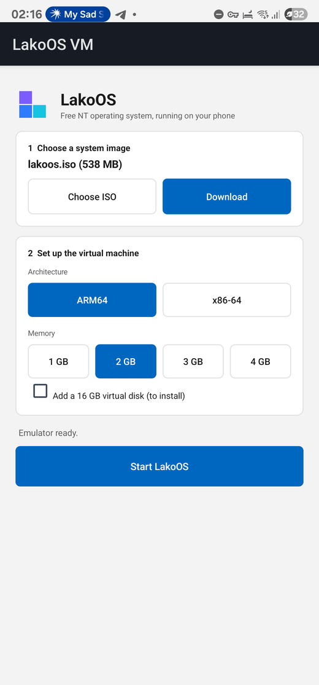
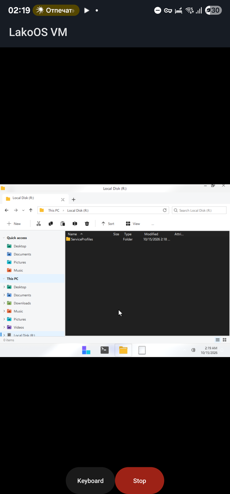

One APK with the emulator, firmware and a built-in display. Run the arm64 or amd64 image on your phone or tablet.
Choose an ISO from your storage or download the live image, set the architecture, memory and resolution, then start the virtual machine.

Touch works as a mouse, two fingers make a right click, and the keyboard button opens the on-screen keyboard.

Allow installs from unknown sources, then open the file.
Tap Download, or choose an ISO you already have.
Tap Start LakoOS. The first boot takes a few minutes.
| Requirements | Android 8 or newer, 64-bit ARM, 3 GB of free memory recommended |
|---|---|
| Speed | Software emulation, no hardware virtualization. Expect slow boots |
| Status | Development preview, tested on one phone |
| License | The app and QEMU are free software (GNU GPL) |